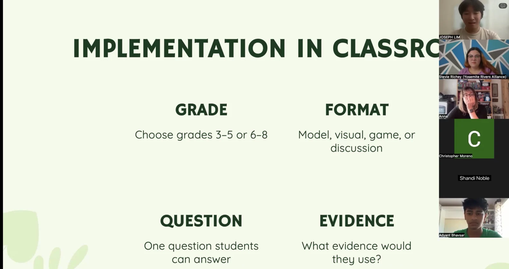

Sharing Research-Based Activities at the CREEC Central Conference
IRISTEM shared ways to turn environmental research into classroom activities, games, and lessons for students in grades 3–8.

Introducing research-based learning to educators
IRISTEM presented at the virtual CREEC Central Fall Conference on September 26, 2026. The program listed Adyant Bhavsar and Joseph Lim as presenters for “IRISTEM: Classroom Activities Adapted From Real Research,” a session for grades 3–8. The conference connected educators, community partners, and environmental leaders around practical approaches to environmental education.
The session focused on a challenge at the center of IRISTEM’s work: scientific research can offer meaningful classroom questions, but technical language, complexity, and limited access can make it difficult for younger students to engage. IRISTEM shared activities, games, and lessons as ways to connect that research with student learning.
Giving research a classroom structure
The classroom implementation portion organized lesson planning around four choices: grade, format, question, and evidence. Participants were prompted to choose grades 3–5 or 6–8, select a model, visual, game, or discussion, identify one question students could answer, and consider what evidence they would use.
Those choices connect the research topic with the learning experience. The grade band helps shape the explanation; the format gives students a way to participate. A focused question establishes what they are investigating, while the evidence prompt asks how they could support an answer. This structure offers a practical starting point for adapting a complex source.
Making scientific ideas easier to use
IRISTEM’s contribution was sharing a student-led approach to educational adaptation and concrete prompts for classroom implementation. The CREEC conference provided a setting to introduce that approach to an audience interested in environmental education and classroom practice.
The session connected research translation with the decisions educators make when planning a lesson. Rather than ending with an explanation of a scientific topic, the approach asks what students will do with that information and how they will reason about it. IRISTEM’s curriculum library offers further examples of this connection between research, accessible explanations, and learning activities.
Event information: Official conference program.